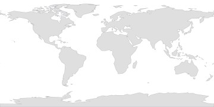

— strongest
No earthquake snapshotPUBLIC SNAPSHOT · NO ACCOUNT · NO LOCATION
The world is doing this without us.
A current portrait built from public scientific feeds and thirteen fixed points spread across the planet. Earth moves. Solar wind arrives. Weather differs. Natural events remain open.
No account. No location. No visitor data. Nothing here is personalized.
THE SAMPLE-AND-HOLD BUS
One now, latched.
Borrowed from analog electronics: acquire changing signals, then hold one stable sample for everything downstream. COMMONS / NOW keeps the previous visible snapshot in place while all five current feeds settle, then commits the new world in one pass.
BUS STATE
HOLD
No sample latched yet.
- 01 · USGSEARTHawaiting first sample
- 02 · NOAAFLOWawaiting first sample
- 03 · NOAASCALESawaiting first sample
- 04 · OPEN-METEOWEATHERawaiting first sample
- 05 · NASAEVENTSawaiting first sample
Five public channels will settle before the first visible snapshot is committed.
This is a current-state latch, not a history. Refreshing replaces the held sample; the application does not keep the previous one.
No space-weather snapshot
NOAA Space Weather Prediction Centercurrently listed in this snapshot
NASA Earth Observatory Natural Event TrackerNo weather snapshot
—Reading the commons…
THIRTEEN WINDOWS
A fixed sample across the planet.
The thirteen sampling points are fixed, non-personal coordinates. They do not follow population, borders, popularity, or the visitor. Some fall on land. Some fall at sea. That is deliberate.

90°N 90°S 180°W 180°E
daylight
twilight
night
—
Basemap: Natural Earth 110m land, public domain, simplified and stored locally. No map or tile service is contacted.
Weather data: Open-Meteo. Fixed coordinates only; browser location is never requested.
THE DIFFERENCE ENGINE
How different can the same planet be at the same moment?
Patch any two fixed windows together. The circuit compares only the current snapshot: distance, temperature, wind, precipitation, and light. It does not rank places or keep a history.
PATCH CABLE
Choose which cable end to move, then choose a numbered socket.
End A is armed. Choose any fixed point below; the other end stays connected.
Waiting for the current weather snapshot.
13-point observed range
- Surface distance
- —
- Temperature A − B
- —
- Wind A − B
- —
- Precipitation A − B
- —
- Light A · B
- —
The Difference Engine derives everything from the existing thirteen-point weather snapshot and local geometry. It makes no additional network request.
PLANETARY SECTION / FIELD SHEET
Cut through the planet as it is now.
Architecture uses a section drawing to reveal what a plan view hides. Here the thirteen fixed stations become discrete measured posts from west to east. The page does not interpolate the unmeasured space between them.
13 FIXED POSTS · WEST → EAST
Waiting for current weather.
READING KEY
post height = temperature within this 13-point snapshot
flag length = wind within this snapshot
rain mark = current precipitation
post tone = day / twilight / night
No connecting line. The stations are measurements, not a continuous weather transect. Unmeasured space stays unmeasured.
| Point | Longitude | Temperature | Wind | Precipitation | Light |
|---|---|---|---|---|---|
| Waiting for the current snapshot. | |||||
This opens the browser’s native print dialog. Print on paper or choose a local PDF destination if your browser provides one. The Museum does not upload or save the sheet.
EARTH
Movement is ordinary.
The earthquake count is a rolling past-hour feed from the USGS. Small events are included because the point is not disaster spectacle; it is the constant movement of the crust.
strongest now
See headline above
SKY
The Sun is touching Earth.
Solar wind is a stream of charged particles arriving from the Sun. The value above is the current speed reported by NOAA SWPC, not a forecast or score.
measurement
km/s
ACTIVE EVENTS
Some conditions remain open.
NASA EONET groups currently open natural events from multiple reporting sources. The list below shows only aggregate categories; event titles and coordinates are not reproduced here.
- No category snapshot
WHAT THIS ACTUALLY DOES
Four public services. Five current feeds.
Loads once.
When the page opens, it requests five current feeds across four public services: USGS, NOAA SWPC, Open-Meteo, and NASA EONET. NOAA supplies two of those feeds. It does not poll in the background.
Samples fixed places.
The weather request uses thirteen coordinates baked into the site. They are unrelated to whoever is visiting.
Stores no visitor history.
No local visitor profile, action log, location, identifier, score, or previous snapshot is kept by the application.
Fails visibly.
If a public service is unavailable, its metric shows as unavailable. The page does not invent a replacement number.
Preparing the fixed world sample.